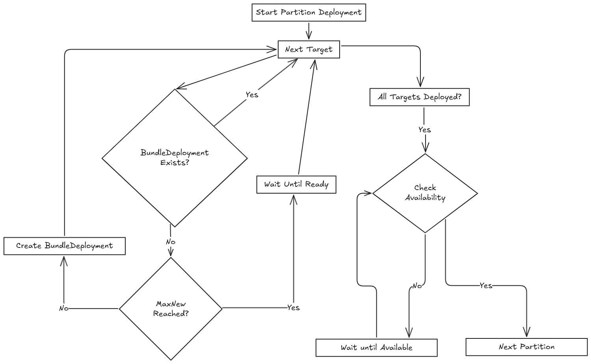

Stratégie de déploiement
SUSE® Rancher Prime Continuous Delivery utilise une stratégie de déploiement pour contrôler comment les applis sont déployées à travers les clusters. Vous pouvez définir l’ordre et le regroupement des déploiements de clusters en utilisant des partitions, permettant des déploiements contrôlés et des mises à jour plus sûres.
SUSE® Rancher Prime Continuous Delivery évalue le statut Ready de chaque BundleDeployment pour déterminer quand passer à la partition suivante. Pour plus d’informations, consultez les champs de statut.
Lors d’un déploiement, le statut GitRepo indique l’avancement du déploiement. Cela vous aide à comprendre quand les paquets deviennent Ready avant de continuer :
-
Pour les déploiements initiaux :
-
Un ou plusieurs clusters peuvent être dans un état
NotReady. -
Les clusters restants sont marqués comme
Pending, ce qui signifie que le déploiement n’a pas commencé. -
Pour les déploiements :
-
Un ou plusieurs clusters peuvent être dans un état
NotReady. -
Les clusters restants sont marqués
OutOfSyncjusqu’à ce que le déploiement continue.
Les options de configuration de déploiement sont documentées dans le champ rolloutStrategy du fleet.yaml.
|
Si |
Comment fonctionne le partitionnement ?
Les partitions sont uniquement utilisées pour regrouper et contrôler le déploiement de BundleDeployments à travers les clusters. Elles n’affectent en rien les options de déploiement.
Si les clusters ciblés ne font pas partie du partitionnement manuel, ils ne seront pas inclus dans le déploiement. Si un cluster fait partie d’une partition, il recevra un BundleDeployment lorsque la partition sera traitée.
Les partitions sont considérées comme NotReady si elles ont des clusters qui dépassent le nombre autorisé de NotReady clusters. Si un cluster est hors ligne, le cluster ciblé ne sera pas considéré comme Ready et restera dans l’état NotReady jusqu’à ce qu’il revienne en ligne et déploie avec succès le BundleDeployment.
Le seuil est déterminé par :
-
Partitions manuelles : Utilisez la valeur
maxUnavailableà l’intérieur de chaque partition pour contrôler la préparation de cette partition, sinon, si non spécifié, elle utiliserolloutStrategy.maxUnavailable. -
Partitions automatiques : Utilisez la valeur
rolloutStrategy.maxUnavailablepour contrôler quand une partition est prête.
SUSE® Rancher Prime Continuous Delivery ne progresse que si le nombre de partitions NotReady reste en dessous de maxUnavailablePartitions.
|
SUSE® Rancher Prime Continuous Delivery déploie des déploiements par lots de jusqu’à
|
Le diagramme suivant montre comment SUSE® Rancher Prime Continuous Delivery gère le déploiement :

Diverses limites qui peuvent être configurées dans SUSE® Rancher Prime Continuous Delivery :
| Champ | Description | Par défaut |
|---|---|---|
maxUnavailable |
Nombre maximum ou pourcentage de clusters qui peuvent être |
100 % |
maxUnavailablePartitions |
Nombre ou pourcentage de partitions pouvant être |
0 |
autoPartitionSize |
Nombre ou pourcentage de clusters par partition auto-créée. |
25 % |
autoPartitionThreshold |
Nombre minimum de clusters requis avant que l’auto-partitionnement soit activé. En dessous de ce seuil, tous les clusters sont placés dans une seule partition. |
200 |
maxNew |
Nombre maximum de |
50 |
Partitions |
Définir des partitions manuelles par étiquettes de cluster ou groupe. Si définie, la taillePartitionAuto est ignorée. |
– |
SUSE® Rancher Prime Continuous Delivery prend en charge le partitionnement automatique et manuel. Pour plus d’informations sur les options de configuration, reportez-vous à l’option rolloutStrategy dans la référence fleet.yaml.
Partitionnement Automatique : SUSE® Rancher Prime Continuous Delivery crée automatiquement des partitions en utilisant autoPartitionSize.
Par exemple, vous avez 200 clusters et définissez autoPartitionSize à 25 %, SUSE® Rancher Prime Continuous Delivery crée quatre partitions de 50 clusters chacune. Le déploiement se poursuit par lots de 50 clusters, vérifiant maxUnavailable avant de continuer.
Le paramètre autoPartitionThreshold contrôle quand l’auto-partitionnement est activé :
-
En dessous du seuil : Tous les clusters sont placés dans une seule partition, indépendamment du paramètre
autoPartitionSize. Cela empêche un partitionnement inutile pour de petits déploiements. -
À ou au-dessus du seuil: SUSE® Rancher Prime Continuous Delivery crée plusieurs partitions en fonction de
autoPartitionSize. -
Seuil personnalisable : Vous pouvez abaisser la limite pour activer le partitionnement avec moins de clusters (par exemple, fixez-la à 50 pour des tests à petite échelle) ou l’augmenter pour éviter le partitionnement jusqu’à ce que vous ayez un grand nombre de clusters (par exemple, fixez-la à 500).
-
Désactiver le partitionnement automatique : Fixez à 0 pour forcer tous les clusters dans une seule partition, quel que soit leur nombre.
Par exemple :
rolloutStrategy:
autoPartitionThreshold: 50 # Enable partitioning with only 50 clusters
autoPartitionSize: 50% # Create partitions of 50% each
[source,text]Avec 50 clusters, cela crée 2 partitions de 25 clusters chacune. Sans définir autoPartitionThreshold, ces 50 clusters seraient dans une seule partition (puisque la limite par défaut est de 200).
Partitionnement manuel : Vous définissez des partitions spécifiques en utilisant l’option partitions. Cela permet de contrôler la sélection des clusters et l’ordre de déploiement.
|
Si vous spécifiez les partitions manuellement, le |
Par exemple, considérez :
rolloutStrategy:
partitions:
- name: demoRollout
maxUnavailable: 10%
clusterSelector:
matchLabels:
env: staging
- name: stable
maxUnavailable: 5%
clusterSelector:
matchLabels:
env: prod
[source,text]SUSE® Rancher Prime Continuous Delivery ensuite :
-
Sélectionne les clusters en fonction de
clusterSelector,clusterGroupouclusterGroupSelector.-
Les partitions peuvent être spécifiées par
clusterName,clusterSelector,clusterGroupetclusterGroupSelector.
-
-
Commence le déploiement vers la première partition.
-
Attend que la partition soit considérée comme
Ready(en fonction du seuilmaxUnavailable). -
Procède à la partition suivante.
Le diagramme suivant illustre comment SUSE® Rancher Prime Continuous Delivery gère le déploiement à travers plusieurs partitions, y compris les vérifications de préparation et le flux de déploiement :

|
|
Dans chaque partition, SUSE® Rancher Prime Continuous Delivery déploie jusqu’à maxNew BundleDeployments à la fois (par défaut : 50). Le diagramme ci-dessous montre comment SUSE® Rancher Prime Continuous Delivery détermine s’il faut continuer ou attendre pendant ce processus :

|
SUSE® Rancher Prime Continuous Delivery recommande d’étiqueter les clusters afin que vous puissiez utiliser ces étiquettes pour assigner des clusters à des partitions spécifiques. |
|
SUSE® Rancher Prime Continuous Delivery traite les partitions dans l’ordre dans lequel elles apparaissent dans le fichier |
Partition unique
Si vous ne définissez pas rolloutStrategy.partitions, SUSE® Rancher Prime Continuous Delivery crée des partitions automatiquement en fonction du nombre de clusters ciblés :
-
Pour moins de
autoPartitionThresholdclusters (par défaut 200), SUSE® Rancher Prime Continuous Delivery utilise une seule partition. -
Pour
autoPartitionThresholdclusters ou plus, SUSE® Rancher Prime Continuous Delivery utilise la valeurautoPartitionSize(par défaut 25 %) pour créer des partitions.
Par exemple, avec 200 clusters (répondant au autoPartitionThreshold par défaut), SUSE® Rancher Prime Continuous Delivery utilise le autoPartitionSize par défaut de 25 %. Cela signifie que SUSE® Rancher Prime Continuous Delivery crée 4 partitions (25 % de 200 = 50 clusters par partition). SUSE® Rancher Prime Continuous Delivery traite jusqu’à 50 clusters à la fois, ce qui signifie qu’il :
-
Déploie aux 50 premiers clusters.
-
Évalue la préparation en fonction de
maxUnavailable.-
Si la condition est remplie, passe aux 50 suivants, et ainsi de suite.
-
Multiples partitions
Si vous définissez plusieurs partitions, SUSE® Rancher Prime Continuous Delivery utilise maxUnavailablePartitions pour limiter le nombre de partitions pouvant être NotReady à la fois. Si le nombre de partitions NotReady dépasse maxUnavailablePartitions, SUSE® Rancher Prime Continuous Delivery met en pause le déploiement.
Prévenir les tempêtes de tirage d’images
Pendant le déploiement, chaque cluster en aval tire des images de conteneur. Si des centaines de clusters commencent à tirer des images simultanément, cela peut submerger le registre et se comporter comme une attaque DDoS.
Pour éviter cela, SUSE® Rancher Prime Continuous Delivery peut contrôler combien de clusters sont mis à jour à la fois. Vous pouvez utiliser les options de configuration de déploiement suivantes pour ralentir et étager le déploiement :
-
autoPartitionSize -
partitions -
maxUnavailable
SUSE® Rancher Prime Continuous Delivery n’ajoute pas de délais artificiels pendant le déploiement. Au lieu de cela, il progresse en fonction de l’état readiness des charges de travail dans chaque cluster. Les facteurs qui affectent la préparation incluent le temps de récupération d’image, le temps de démarrage et les sondes de préparation. Bien que l’utilisation de sondes de préparation soit recommandée, elles ne sont pas strictement nécessaires pour contrôler la vitesse de déploiement.
Par exemple, vous avez 200 clusters, qui sont partitionnés manuellement, chacune contenant 40 clusters et vous souhaitez éviter une tempête de récupération d’image :
-
maxUnavailablePartitions: Définissez sur 0. -
maxUnavailable: Définissez sur 10 %.
Comment le déploiement progresse :
-
SUSE® Rancher Prime Continuous Delivery commence par la première partition (40 clusters).
-
Il déploie jusqu’à 50
BundleDeploymentsà la fois. Ainsi, il déploie tous les 40 clusters de la partition en un seul lot. -
SUSE® Rancher Prime Continuous Delivery vérifie si les clusters de la partition sont prêts.
-
Si plus de 4 clusters ne sont pas prêts, alors la partition est considérée comme
NotReadyet le déploiement est mis en pause. -
Une fois que ≤4 clusters sont
NotReady, SUSE® Rancher Prime Continuous Delivery poursuit le déploiement.
-
-
Lorsque l’ensemble de la partition est principalement prêt (90 %), SUSE® Rancher Prime Continuous Delivery passe à la partition suivante.
Si vous souhaitez ou devez traiter moins de 40 déploiements à la fois, vous pouvez mettre moins de clusters dans chaque partition.
Cas d’utilisation et comportement
Si le nombre de clusters ne se divise pas uniformément, SUSE® Rancher Prime Continuous Delivery arrondit les tailles de partition. Par exemple, 230 clusters avec autoPartitionSize: 25% donne :
-
Quatre partitions de 57 clusters
-
Une partition de 2 clusters
Scénario : 50 Clusters (Partition unique)
rolloutStrategy:
maxUnavailable: 10%
[source,text]-
SUSE® Rancher Prime Continuous Delivery crée une partition contenant les 50 clusters, car aucune partition n’est définie.
-
Aucune nécessité de spécifier
maxUnavailablePartitions, car une seule partition est créée. -
Bien qu’il n’y ait pas de partition manuelle spécifiée et que
maxUnavailablesoit réglé à 10 %, SUSE® Rancher Prime Continuous Delivery déploie tous les 50 clusters en même temps (le comportement par lot remplace initialementmaxUnavailable). -
L’évaluation a lieu après que tous les déploiements ont été créés.
Le diagramme suivant illustre comment SUSE® Rancher Prime Continuous Delivery gère 50 clusters dans une seule partition :

Scénario : 100 Clusters (Partition unique)
rolloutStrategy:
maxUnavailable: 10%
[source,text]-
SUSE® Rancher Prime Continuous Delivery crée une partition contenant les 100 clusters, car aucune partition n’est définie.
-
Aucune nécessité de spécifier
maxUnavailablePartitions, car vous n’en avez qu’une. -
Bien qu’il n’y ait pas de partition manuelle spécifiée et que
maxUnavailablesoit réglé à 10 %, SUSE® Rancher Prime Continuous Delivery déploie 50 clusters en même temps (le comportement par lot remplace initialementmaxUnavailable).
Si 10 clusters (10 % de 100 clusters) ne sont pas disponibles, le déploiement des 50 clusters restants est suspendu jusqu’à ce que moins de 10 clusters soient NotReady.
Scénario : 200 Clusters (Multiples partitions)
rolloutStrategy:
maxUnavailablePartitions: 1
autoPartitionSize: 10%
[source,text]-
SUSE® Rancher Prime Continuous Delivery crée 10 partitions, chacune avec 20 clusters.
-
Le déploiement se poursuit séquentiellement par partition.
-
Si deux partitions ou plus deviennent
NotReady, le déploiement est suspendu. -
Si une partition est
NotReady, le déploiement peut se poursuivre vers la suivante.
SUSE® Rancher Prime Continuous Delivery crée BundleDeployments pour 20 clusters, attend qu’ils deviennent Ready, puis passe au suivant. Cela limite effectivement le nombre de téléchargements d’images depuis les clusters en aval à environ 40 images à la fois.
Scénario : 200 Clusters (Préparation stricte, Partitions manuelles)
La partition manuelle vous permet de contrôler le regroupement des clusters avec maxUnavailablePartitions: 0.
rolloutStrategy:
maxUnavailable: 0
maxUnavailablePartitions: 0
partitions:
- name: demoRollout
clusterSelector:
matchLabels:
stage: demoRollout
- name: stable
clusterSelector:
matchLabels:
stage: stable
[source,text]-
Vous définissez des partitions manuelles en utilisant
clusterSelectoret des étiquettes commestage: demoRolloutetstage: stable. -
SUSE® Rancher Prime Continuous Delivery crée
BundleDeploymentspour les clusters dans la première partition (par exemple,demoRollout). -
Le déploiement se déroule strictement dans l’ordre, SUSE® Rancher Prime Continuous Delivery ne passe à la partition suivante que lorsque la partition actuelle est considérée comme prête.
-
Avec
maxUnavailable: 0etmaxUnavailablePartitions: 0, SUSE® Rancher Prime Continuous Delivery suspend le déploiement si une partition n’est pas considérée comme prête.
Le diagramme suivant décrit comment SUSE® Rancher Prime Continuous Delivery gère la décision de continuer ou de suspendre le déploiement.

Cela garantit une préparation complète et un déploiement par étapes sur les 200 clusters. Utilisez cette approche lorsque vous avez besoin d’une séquence de déploiement précise et d’une préparation complète des clusters avant d’avancer.
Valeurs par défaut de la stratégie de déploiement
Si les valeurs de déploiement au niveau de la partition ne sont pas définies, SUSE® Rancher Prime Continuous Delivery applique les valeurs globales de rolloutStrategy dans fleet.yaml. Les paramètres spécifiques à la partition remplacent les valeurs globales lorsqu’ils sont explicitement définis.
Par défaut, SUSE® Rancher Prime Continuous Delivery définit :
-
maxUnavailableà100%: Tous les clusters d’une partition peuvent êtreNotReadyet être considérés comme Prêts. -
maxUnavailablePartitionsà0: Empêche le déploiement uniquement lorsque une ou plusieurs partitions sont considérées commeNotReady. Cependant, cette vérification est inefficace si toutes les partitions semblent Prêtes en raison demaxUnavailable: 100%.
Par exemple, considérez 200 clusters avec les paramètres par défaut :
-
SUSE® Rancher Prime Continuous Delivery crée 4 partitions de 50 clusters chacune (
autoPartitionSize: 25%). -
Parce que
maxUnavailableest100%, chaque partition est traitée commeReadyimmédiatement. -
SUSE® Rancher Prime Continuous Delivery progresse à travers toutes les partitions, indépendamment de leur préparation réelle.
SUSE® Rancher Prime Continuous Delivery vous recommande de contrôler les déploiements en définissant :
-
Baissez
maxUnavailable, par exemple à 10 %. -
Définissez
maxUnavailablePartitionsà 0 ou plus, si vous le souhaitez.
Cela garantit :
-
Les partitions répondent aux critères de préparation avant que le déploiement ne continue.
-
SUSE® Rancher Prime Continuous Delivery suspend le déploiement si trop de partitions ne sont pas prêtes.